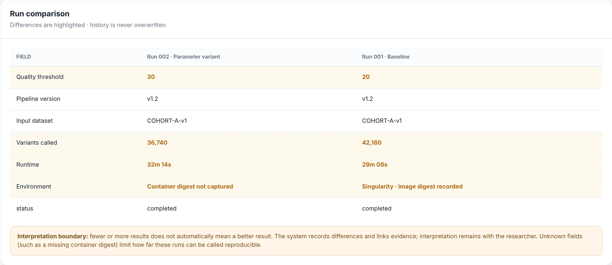

Metadata layer for scientific data
From any output, back to its inputs.
Jubilab is a local-first, self-hostable metadata layer for scientific data. It links to your data where it lives, records each processing run, and labels every fact verified, inferred, manual or unknown. When the record does not say, it says ‘cannot determine’.
Scroll the diagram sideways, or read the text version below.
Text version
- Cohort_A.fastq.gz (data asset, S3, 120 files, version v1) was used as input by Run 001 and by Run 002.
- Run 001 (Nextflow, quality_threshold = 20) generated variants_run001.vcf (HPC, 42,180 variants).
- Run 002 (Nextflow, quality_threshold = 30, changed) generated variants_run002.vcf (HPC, 36,740 variants).
- Run 002’s container digest is unknown: it was not captured.
What a run record is
A record names its inputs, its parameters, its executor and its status. It is written once. A later run is a new record, not an edit of an old one, so history is immutable. The data itself is not in the record, only where it is.
From the command-line session
- id
- run-002
- name
- Variant calling, threshold 30
- input
- fastq-v1
- parameter
- quality_threshold = 30
- executor
- nextflow
- status
- completed
Shown in the interface for the same run
- definition
- Variant pipeline v1.2
- execution
- HPC cluster, 32m 14s
- output
- variants_run002.vcf, 36,740 variants
- environment
- unknown: container digest not captured
Pointers, not data. The input fastq-v1 is a registered asset: a name, a location, a type and a version. The files stay where they are.
Projects are separate. Each project keeps its own assets, runs and history. Nothing is shared between projects.
Two sources, one demo. The upper group is copied from the arguments of a real jubilab register-run call; the lower group from the running interface. Both are demo data.
Back to the inputs, forward to what depends on them
Open an output and Jubilab highlights the run that made it and the inputs that run used. Open an input and it highlights every run and output that depends on it. The two views below use the same graph.
Text version: variants_run002.vcf was generated by Run 002, which used Cohort_A.fastq.gz as input. Run 001 and its output are not involved.
Text version: Run 001 and Run 002 used Cohort_A.fastq.gz. Run 001 generated variants_run001.vcf; Run 002 generated variants_run002.vcf.
Compare two runs. See what changed.
Pick two runs and Jubilab lines up their fields. Differences are marked in amber and with the word “changed”. It records the difference; it does not say which result is better.
| Field | Run 001 | Run 002 | State |
|---|---|---|---|
| Quality threshold | 20 | 30 | Δ changed |
| Pipeline version | v1.2 | v1.2 | same |
| Input dataset | COHORT-A-v1 | COHORT-A-v1 | same |
| Variants called | 42,180 | 36,740 | Δ changed |
| Runtime | 29m 08s | 32m 14s | Δ changed |
| Environment | Singularity, image digest recorded | Container digest not captured (unknown) | Δ changed |
| Status | completed | completed | same |
Show the same comparison as the server returned it (real output, demo session)
{
"ids": ["run-001", "run-002"],
"fields": [
{"field": "Executor", "values": {"run-001": "nextflow", "run-002": "nextflow"}, "differs": false},
{"field": "quality_threshold", "values": {"run-001": "20", "run-002": "30"}, "differs": true},
{"field": "status", "values": {"run-001": "completed", "run-002": "completed"}, "differs": false}
]
}

Four states of a fact
A complete-looking record can still have gaps. Every fact carries one of four labels, each with a word and a shape, never colour alone. Jubilab does not imply a run is reproducible because it has a record.
- verified
- Checked against the source, or captured directly by the tool.
- inferred
- Worked out from other records, not observed directly.
- manual
- Entered or annotated by a person.
- Demo: “Run 001 kept as baseline” is a researcher annotation.
- unknown
- The record does not say. Jubilab shows the gap instead of filling it in.
- Demo: Run 002’s container digest was not captured.
Record on a node without internet. Sync later.
On an HPC node with no network, the command-line tool writes each record to a spool file. When the server can be reached, jubilab sync sends the file’s records to it.
Text version: the jubilab command on a node without internet writes each record to jubilab-spool.p_8hakp36js1.jsonl. Later, jubilab sync sends the spooled records to the Jubilab server, which reports how many were applied, duplicated or in error.
$ jubilab register-run --id run-002 --name "Variant calling, threshold 30" --input fastq-v1 -p quality_threshold=30 --status completed --executor nextflow spooled register_run key=ed400327f323beb1c015acf5e7ed1297 -> jubilab-spool.p_8hakp36js1.jsonl $ jubilab sync synced 3 record(s) to http://127.0.0.1:18190/api/projects/p_8hakp36js1/ingest: applied=3 duplicate=0 error=0 $ jubilab status spool: jubilab-spool.p_8hakp36js1.jsonl (3 records, 0 unsynced) server: http://127.0.0.1:18190 {"projects":{"active":1,"archived":0,"unavailable":0},"status":"ok","version":"0.1.0"} project: p_8hakp36js1 (Cohort A)
One command, on your machine, with no calls out
Jubilab starts with one command: python -m server serve --data-dir ./data. The server binds to localhost and makes no outbound network calls. No AI model is required.
Text version: a browser or the jubilab command talks to the Jubilab server on 127.0.0.1. The server keeps its records in a data directory and makes no outbound network calls. Your data stays where it is; Jubilab records its location, version and a description.
Answers come from recorded evidence, or “cannot determine”
Questions are answered by retrieving records, not by a language model. The interface says so itself: “Deterministic retrieval over structured records. No generative model.” Each answer cites its records and lists what is missing.
What changed between the two variant runs?
Evidence-backed answer · incomplete
Differences between RUN-001 and RUN-002: Quality threshold: 20 (RUN-001), 30 (RUN-002); Variants called: 42,180 (RUN-001), 36,740 (RUN-002); Runtime: 29m 08s (RUN-001), 32m 14s (RUN-002); Environment: Singularity · image digest recorded (RUN-001), Container digest not captured (RUN-002). Unchanged: Pipeline version = v1.2; Input dataset = COHORT-A-v1; status = completed. Variants called changed by -5,440 (-12.9%). The system records differences only; it does not establish which result is better. Unknown evidence limits how far these runs can be called reproducible.
Missing / unknown provenanceRUN-002 · Environment: Container digest not captured (unknown)
Answer text copied from the Ask page of the demo project; it cites Run 001, Run 002, variants_run001.vcf and variants_run002.vcf as evidence links.
What it is not, and what is not there yet
Jubilab is early-stage software. These are its edges today.
What it is not
- Not a workflow engine. Nextflow, your scheduler or a shell script still run the work. Jubilab records what happened.
- Not storage. It keeps pointers and context, not your files.
- Not a replacement for your tools. It sits beside them.
- Not a promise of reproducibility. It shows what was recorded and what was not.
Not there yet
- No sign-in or access control.
- No hosted service. You run it yourself.
- No storage-system connectors.
- Licence and terms: not decided yet.
- No performance figures. None are published.
Request early access
Jubilab is not publicly available yet. Leave an email address to be told when early access opens, and say what kind of data you work with.